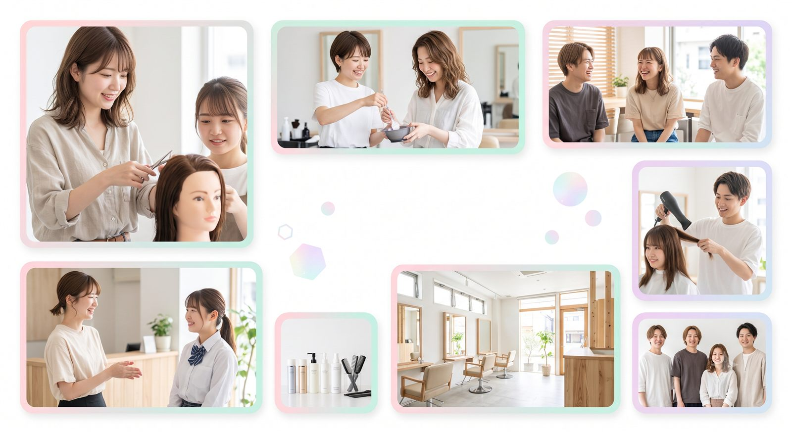
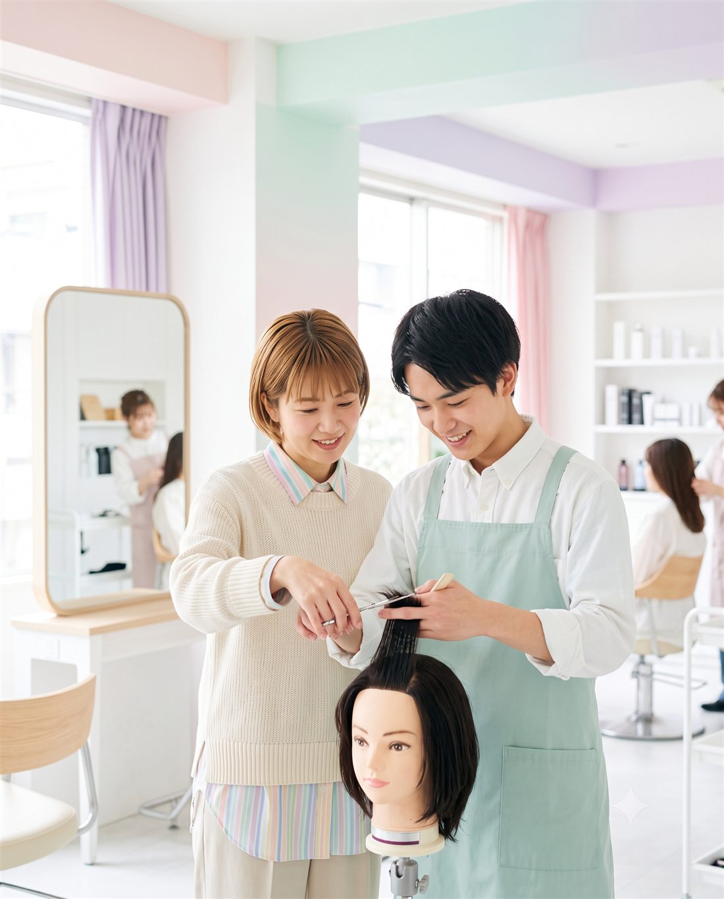

EDUCATION
技術の不安を、聞ける質問に変える。
デビューまでの流れ、練習、技術チェックを見学前に整理します。
このページは社内共有用のテスト版です。合言葉を入力してください。

BASSA RECRUIT AI CHECK
まだ応募じゃなくて大丈夫。3問で、あなたに合いそうな成長ルートと見学で聞くことを整理します。
応募前の、ちょうどいい入口。
技術、教育、人間関係、働き方。ぼんやりした不安を、相談しやすい言葉に変える診断です。
回答はこのページ内だけで使います。テスト版では保存されません。

AI診断結果 / シミュレーション
この診断は回答内容に基づくシミュレーションです。実際の制度、働き方、募集条件は見学や採用相談で確認してください。
BASSA RECRUIT WORLD
スマホで不安を整理して、LINEで質問して、サロン見学へ。応募より前の行動をつくるLPです。
デビューまでの流れ、練習、技術チェックを見学前に整理します。
人間関係や相談しやすさは、写真と見学導線で自然に伝えます。
LP ENGINE POINT
求人LPを説明ページではなく、診断体験に変えるためのテストです。 今後は質問、AIプロンプト、CTA、計測をLPごとに差し替えられる構成へ広げます。